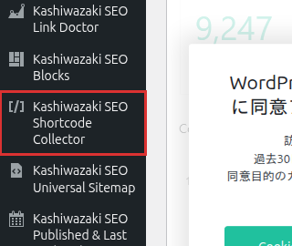

インストール・初期設定
Kashiwazaki SEO Shortcode Collector のインストール方法と、レイアウト・ブレークポイントなどの基本設定を説明します。
インストール手順
WordPress管理画面から プラグイン > 新規追加 に移動し、「Kashiwazaki SEO Shortcode Collector」を検索します。または、プラグインのZIPファイルを プラグイン > 新規追加 > プラグインのアップロード からアップロードします。
「今すぐインストール」をクリックし、インストール完了後「有効化」をクリックします。
管理画面の左メニューに「Kashiwazaki SEO Shortcode Collector」が追加されます。クリックして設定画面を開きます。管理画面はウィザードタブと設定タブの2タブ構成です。

有効化後、まずウィザードタブでショートコードを生成し、投稿や固定ページに貼り付けることですぐにコンテンツ一覧を表示できます。
レイアウト設定
ショートコードで出力するコンテンツ一覧のレイアウトを3種類から選択できます。
| レイアウト | 説明 |
|---|---|
| グリッド | 1〜6列のグリッド表示。サムネイル・タイトル・抜粋をカード形式で表示します。コンテンツ量が多いページに最適です。 |
| リスト | 縦並びのリスト表示。サムネイルとテキストを横並びに配置します。ブログ記事一覧に適しています。 |
| カルーセル | 横スクロール形式のスライダー表示。限られたスペースで多くのコンテンツを表示できます。 |
グリッドの列数設定
グリッドレイアウトでは、1列から6列までの列数を指定できます。列数はデスクトップ表示時の値で、モバイル・タブレットではブレークポイント設定に基づいて自動的に列数が調整されます。
列数が多いほどコンテンツは小さく表示されます。サムネイルと抜粋のバランスを考慮して、2〜4列が推奨です。
レスポンシブ設定（ブレークポイント）
モバイルとタブレットのブレークポイントを設定し、デバイスに応じたレイアウトの切り替えポイントを制御できます。
| 設定項目 | 説明 |
|---|---|
| モバイルブレークポイント | この幅以下でモバイルレイアウトに切り替えます。デフォルトはテーマに依存します。 |
| タブレットブレークポイント | この幅以下でタブレットレイアウトに切り替えます。モバイルブレークポイントより大きい値を設定してください。 |
ブレークポイントの値を変更した場合、キャッシュプラグインのキャッシュをクリアしてからフロントエンドの表示を確認してください。
基本的なショートコード
最もシンプルなショートコードの記述例です。詳細なパラメータはショートコードウィザードページで解説します。
[ksc_collector post_type="post" layout="grid" columns="3"]上記のショートコードは、投稿タイプ「投稿」のコンテンツを3列グリッドで一覧表示します。
ショートコードのパラメータを覚える必要はありません。ウィザードを使えば、GUI操作でショートコードを自動生成できます。